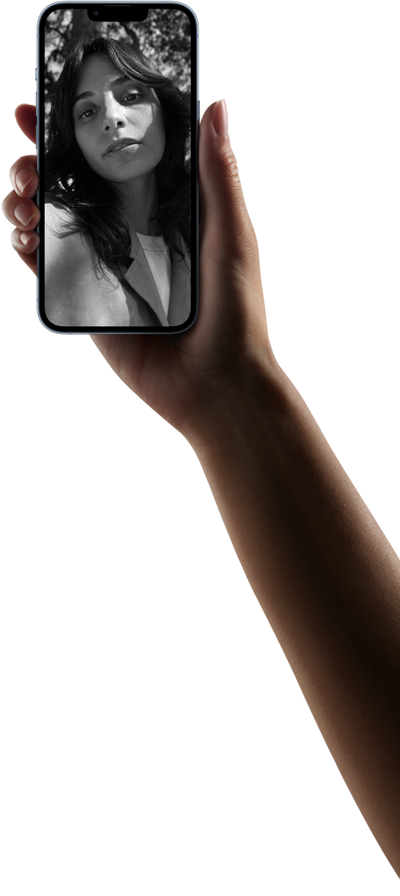

<div class="camera-truedepth">
  <div class="shared-container">
    <div class="font-style text-container-1">
      <p class="title">
        <span class="wrap">原深感測相機系統</span>
        <span class="wrap">完全也是 Pro 等級，具備：</span>
      </p>

      <ul class="list">
        <li class="list-item">
          <p class="text">電影級模式</p>
        </li>

        <li class="list-item">
          <p class="text">攝影風格</p>
        </li>

        <li class="list-item">
          <p class="text">ProRes 影片錄製</p>
        </li>

        <li class="list-item">
          <p class="text">杜比視界 HDR 錄製</p>
        </li>

        <li class="list-item">
          <p class="text">人像模式</p>
        </li>

        <li class="list-item">
          <p class="text">夜間模式自拍</p>
        </li>

        <li class="list-item">
          <p class="text">智慧型 HDR 4</p>
        </li>

        <li class="list-item">
          <p class="text">深度融合</p>
        </li>

        <li class="list-item">
          <p class="text">還有更多...</p>
        </li>
      </ul>
    </div>

    <div class="image-container">
      <picture>
        <source
          srcset="../../../../../public/images/section-camera-camera-truedepth-true-depth-large.png"
          media="(min-width: 1068px)"
        />
        <source
          srcset="../../../../../public/images/section-camera-camera-truedepth-true-depth-medium.png"
          media="(min-width: 734px)"
        />
        <source
          srcset="../../../../../public/images/section-camera-camera-truedepth-true-depth-small.png"
        />
        
      </picture>
    </div>

    <div class="font-style text-container-2">
      <p class="intro">難怪你的自拍<span class="wrap">美翻了。</span></p>

      <p class="title">
        A15 仿生與原深感測相機聯手驅動 Face
        ID，帶來智慧型手機中最安全的臉部認證技術。
      </p>
    </div>
  </div>
</div>
